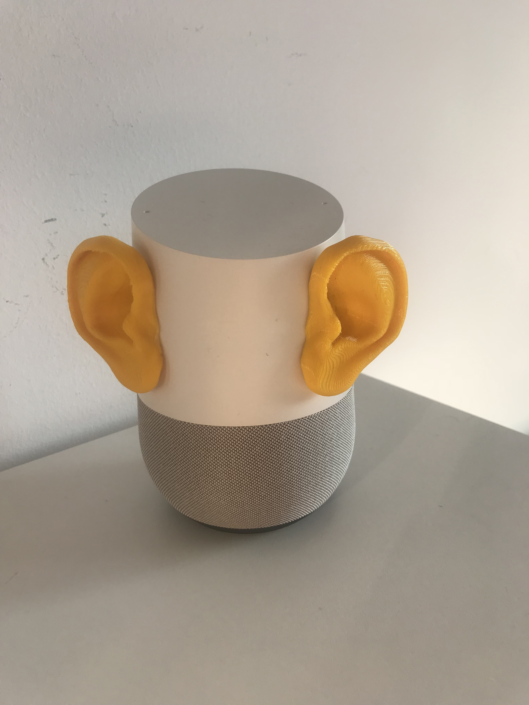

Supplies:
3-D printer
Hot glue
Since most users do not have access to 3-D printing devices, this design solution is the most future-facing but it is also the most straightforward. Smart speakers are not really looking devices, they are hearing devices. By 3-D printing replicas of human ears and affixing them to the devices, the nature of the device as always listening is explicitly expressed in the design.
3D printed ear designs via Thingiverse
Critical Design Intervention 3: Ears
